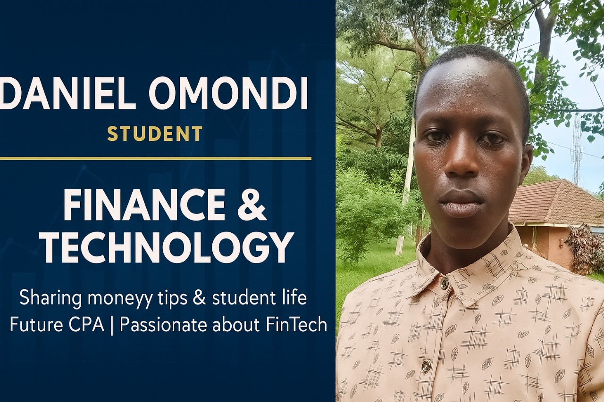

Summary
I am a goal-oriented person passionate about
my work and always loves to socialize with people.
Education Background
- Bachelor of science, Accounting and Finance, with IT - Maseno University -(2025-2029)
Work Experience
Career advisor (2023-2024)
- lead about 30 students at various schools into choosing the best career
Guidance and Counseling (2022-2024)
- Gave several guidance and counseling
to various students at Ramba Boys High School.
Skills
- Computer Services💻🖥️
- Career development
- Web development skills🕸️🕸️
Certificate and Awards
- Certificate in Career readiness - Cooperative Bank Foundation - 2025
- Certificate in Computer Packages - St Vincent De Paul ICT centre - 2025
Added info:
Hobbies